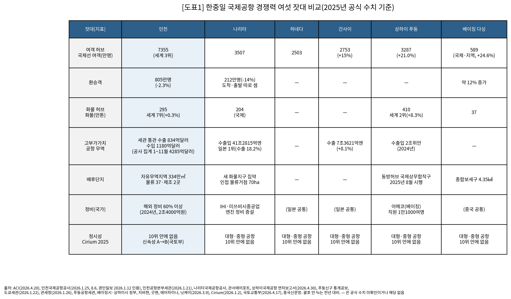
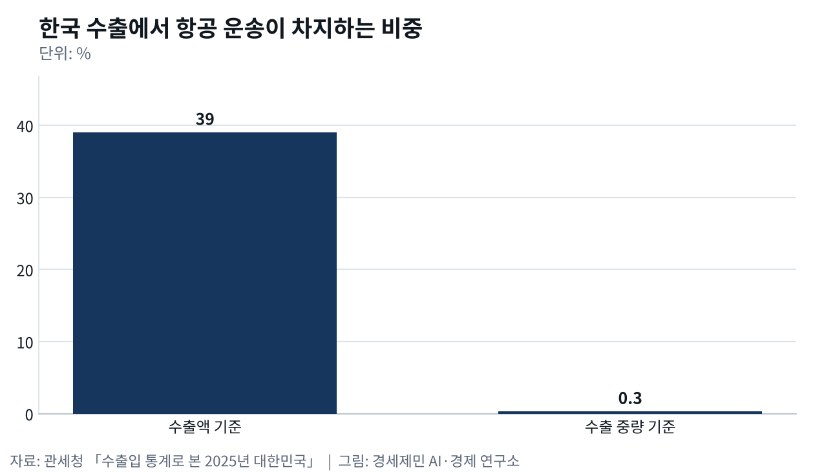
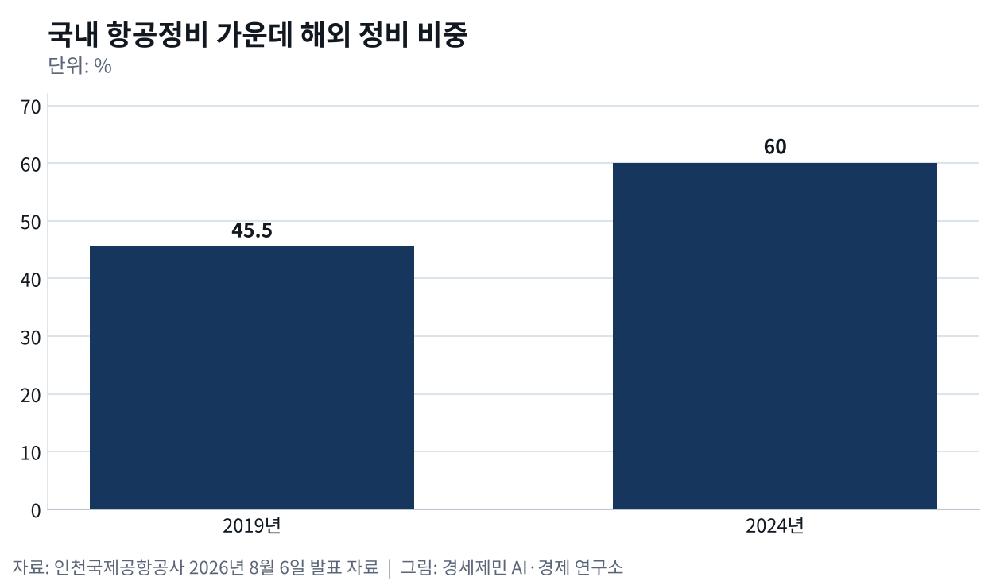

수출은 하늘로 39%, 정비는 해외로 60%
항공 수출 2760억달러, 무게로는 54만톤 0.3%
인천공항세관 수출, 미국 35% 늘고 중국 29% 줄었다
나리타 활주로 용지 수용 준비, 인천 5단계는 고시 대기
AI경세제민=김갑봉 기자 | 관세청이 1월 낸 '수출입 통계로 본 2025년 대한민국' 자료를 보면 한국 수출 7094억달러 가운데 2760억달러가 항공으로 나갔다. 수출액 가운데 약 39%다. 무게로는 1억9849만톤 가운데 54만톤, 0.3%다. 반도체 수출은 1753억달러로 역대 최대였고 수출 비중 24.7%도 역대 최고였다. 수출 상위 5개 품목 비중이 50%를 넘은 것은 2022년 이후 처음이다.
하편은 고부가가치 생산과 배후단지와 정비를 잰다. 지난해 말 국내 학술지에 실린 연구는 30년 동안 한국과 항공 수출 상위 10개국 사이 항공화물 교역을 분석했다. 연구진은 한국 국내총생산과 상대국 1인당 국내총생산을 가장 큰 동인으로 꼽았다. 거리 같은 지리 요인과 단기 충격 영향은 제한적이었다. 연구진은 항공 교역이 경제 구조에 크게 반응한다고 밝혔다.
고부가가치, 나리타는 장비와 의약품, 인천은 반도체다
도쿄세관이 1월 22일 낸 2025년 나리타공항 무역 개황을 보면 수출입액은 41조2815억엔(약 360조원)으로 사상 최대다. 일본 수출 가운데 18.2%, 수입 가운데 18.7%를 맡아 항만과 공항을 통틀어 1위다. 1위 수출품은 반도체 제조장비, 1위 수입품은 의약품이다. 최대 수출 상대는 중국으로 6조8868억엔(약 60조원)이다.

인천은 집계가 둘이다. 인천국제공항공사 집계로 지난해 1~11월 인천공항 수출입액은 4285억달러(약 581조원)였고 반도체가 2176억달러로 절반을 넘었다. 인천공항본부세관이 통관한 물품만 세면 2025년 수출 834억달러, 수입 1180억달러다. 세관 통관 수출은 17.8% 늘어 국내 수출 가운데 11.8%를 맡았다.
행선지는 나리타와 다르다. 인천공항세관 통관 수출 1위 상대는 미국으로 186억달러이고 34.8% 늘었다. 중국은 122억달러로 29.0% 줄었다. 상하이세관은 올해 1~8월 푸둥 전자상거래 통관이 5억7800만건으로 41.37% 늘었다고 밝혔다. 인천공항을 사례로 한 지난해 국제 학술지 연구는 디지털 전환과 정보 공유가 화물 허브 민첩성을 높인다고 밝혔다.
배후단지, 인천 자유무역지역 제조기업은 2곳이다
인천공항 자유무역지역은 2005년과 2007년과 2020년 세 차례 지정됐고 지정 면적을 더하면 334만1000㎡다. 공사 누리집을 보면 공항물류단지에 물류기업 37곳과 제조기업 2곳이 들어와 있다. 중소기업 공동물류센터는 연면적 2만6000㎡ 규모로 올해 말 준공할 예정이다. 제3물류단지 35만6773㎡는 국토교통부 2023년 계획상 2027년 조성이 목표다.

중국은 공항 배후단지를 보세구역과 특구 제도로 묶었다. 베이징 다싱공항 종합보세구는 4.35㎢다. 1기 구역은 2021년 12월 운영을 시작했고 2기 2.084㎢가 지난해 초 준공 검사를 마쳤다. 상하이시는 2025년 8월 1일 푸둥공항 옆 동방허브 국제상무합작구 규정을 시행했다. 외국인은 여권과 사전 등록한 초청장으로 들어와 30일 동안 상담과 전시와 보세 연구개발을 한다.
나리타는 새 화물지구로 물류 기능을 모은다. 지바현은 연간 운항 50만회가 되면 여객 7500만명, 화물 300만톤, 공항 종사자 7만명에 이른다고 내다봤다. 물류기업 굿맨은 공항 옆 70ha에 물류 거점을 짓기로 했다. 상하이 훙차오공항 주변 기업 입지를 분석한 올해 연구는 도심이 여전히 기업을 끈다고 밝혔다. 다만 허브 연결성이 도심 접근성을 앞서면 과학·소프트웨어 기업이 공항 쪽을 골랐다.
정비, 국내 정비비 60%가 해외로 나간다
인천국제공항공사는 8월 6일 2024년 국내 항공정비 시장 3조9000억원 가운데 2조4000억원, 60% 이상이 해외 정비로 나갔다고 밝혔다. 해외 비중은 2019년 45.5%였다. 첨단복합항공단지 화물기 개조시설은 5월 보잉 777 초도기 작업을 시작해 10월께 출고를 목표로 한다. 개조 부품 4000여개는 경남 사천 일대 협력업체 40여곳이 만든다.

대한항공은 5780억원을 들여 2027년 영종도 운북지구 엔진정비공장을 연다. 정비할 수 있는 엔진이 연 100대에서 360대로 는다. 중국 에어차이나와 루프트한자가 합작한 베이징 아메코(Ameco)는 직원이 1만1000여명이다. 일본에서는 IHI가 수백억엔을 더 투자하고 미쓰비시중공업이 엔진 정비 능력을 두 배로 늘린다.
[도표1] 한중일 국제공항 경쟁력 여섯 잣대 비교표. 2025년 공식 수치 기준이다(각 기관 발표 종합)
다음 경쟁은 활주로와 산업이다
나리타국제공항공사 사장은 7월 13일 B활주로 연장 구간을 2029년도 안에 먼저 쓰고 C활주로 구역은 토지수용 절차를 준비한다고 국토교통상에게 보고했다. 수용 절차를 밟으면 1969년 이후 57년 만이다. 푸둥은 연간 5000만명을 받는 제3터미널을 2028년 쓸 수 있게 짓고 있다. 완공하면 연간 1억3000만명을 받는다.
인천 5단계는 제3여객터미널과 제5활주로를 지어 수용 능력을 1억3000만명으로 늘린다. 지난해 한국항공운항학회지에 실린 연구는 제5활주로 북측 연결유도로를 복선으로 놓으면 누적 편익이 공사비를 넘는다고 추정했다. 국토교통부는 제7차 공항개발종합계획(2026~2030)을 올해 말 고시할 예정이고 9월 말 현재 나오지 않았다. 5단계와 배후단지 산업 유치가 다음 경쟁을 가르는 갈림길이다.
※ 이 기사는 AI 프로그램 클로드를 활용해 작성했습니다.
참고문헌
기관 자료
- 北京市人民政府, 大兴国际机场综保区二期通过验收, 2025년 1월 4일. https://www.beijing.gov.cn/ywdt/gzdt/202501/t20250104_3980815.html
- 上海市人民政府, 上海东方枢纽国际商务合作区管理办法(시 정부령 제22호), 2025년 7월 1일. https://www.shanghai.gov.cn/202515zfgz/20250807/8396b1ad57724750bb9052917cfdf685.html
- 千葉県, 成田空港「第2の開港」に向けて, 2025년 7월 4일 갱신. https://www.pref.chiba.lg.jp/kuushin/narita/dai2nokaiko.html
- 東京税関, 令和7年分 成田空港貿易概況(速報), 2026년 1월 22일. https://www.customs.go.jp/tokyo/tokuR07soku.pdf
- 관세청, 수출입 통계로 본 2025년 대한민국, 2026년 1월 26일.
- 인천공항본부세관, (2025.12월) 수출입통관현황, 2026년 1월 21일. https://www.customs.go.kr/incheon_airport/na/ntt/selectNttList.do?mi=12510&bbsId=2960
- 인천국제공항공사, 자유무역지역 안내, 누리집. https://www.airport.kr/co_ko/719/subview.do
- 인천국제공항공사, "인천공항, 여객·물류 넘어 항공 MRO 허브로 도약", 2026년 8월 6일. https://www.airport.kr/co_ko/664/subview.do
연구 논문
- Hong, S.-J., Kim, W., & Hiatt, B., "Examining airport agility at air cargo hub airports", 『Journal of Air Transport Management』 122, 2025년, 102710. https://doi.org/10.1016/j.jairtraman.2024.102710
- 강동성, 김민우, 신중하, 백호종, 이현진, "인천국제공항 제5활주로 북측연결유도로 설계대안 비교 분석 연구", 『한국항공운항학회지』 33(2), 2025년, 99~110쪽. https://doi.org/10.12985/ksaa.2025.33.2.99
- Zou, W., Qi, J., Ng, A. K. Y., Liu, S., & Jiang, Y., "Access, land-use policy, agglomeration and spatial dependence in airport-area firm location: evidence from Shanghai Hongqiao", 『Transport Policy』 175, 2026년, 103888. https://doi.org/10.1016/j.tranpol.2025.103888
- 임재환, 김영록, "한국의 항공화물운송을 통한 수출입 분석 연구: 수출 상위 10개국을 중심으로", 『한국항공운항학회지』 33(4), 2025년 12월, 161~168쪽. https://doi.org/10.12985/ksaa.2025.33.4.161
언론기사
- 경인일보, "인천공항 수출입 증가, 반도체 홀로 견인", 2026년 1월 12일. https://www.kyeongin.com/article/1757605
- Aviation Wire, "成田空港、B滑走路延伸29年度供用へ C滑走路は57年ぶり収用手続き準備", 2026년 7월 14일. https://www.aviationwire.jp/archives/347116
※ 이 기사는 인공지능을 활용해 작성했습니다. 사실관계는 저자가 확인했습니다.
관련기사
- 인천 국제선 여객 세계 1위, 화물 허브는 푸둥에 밀렸다
- 허브는 밀도로 이긴다, 인천 환승 598만명
- 인천공항 일자리 66만개, 인천 몫은 21만개
- 인천공항, 개항 25년 만에 국제선 세계 1위
저작권자 © AI경세제민 무단전재 및 재배포, AI학습 및 활용 금지